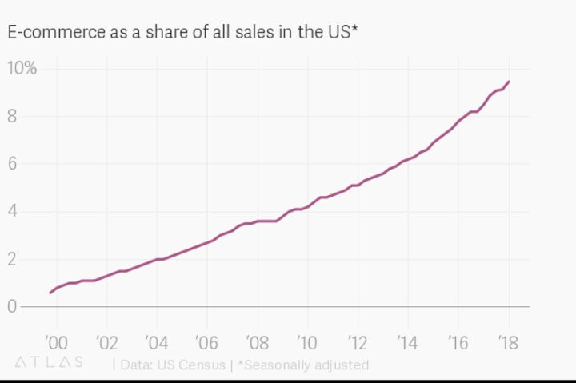

Ovatko huhut kivijalkakaupan kuolemasta liioiteltuja?
Osakkeen laskenut hinta ei läheskään aina ole ostotilaisuus. Yrityksiä menee yhtenään nurin ja aika ajoin viikatemies vie mukanaan kokonaisia aloja. Maailman muuttuessa yhä nopeammin, yhdeksi sijoitusprosessin tärkeimmäksi vaiheeksi on tullut miettiä, tuleeko yhtiöstä lähitulevaisuudessa tarpeeton.
Vajaa 60 vuotta sitten eräällä nuorella miehellä oli tapana pitkien sijoitusten lisäksi spekuloida pörssissä. Hän kiinnostui tekstiiliyhtiöistä, koska niiden osakkeiden kurssit olivat hyvin edullisia, ja niillä oli taipumusta nousta aina, kun tekstiilitehtaita suljettiin (aivan kuten Suomen metsäfirmat viisi vuotta sitten!). Eli tarkoitus oli tehdä nopeahkot voitot ostamalla keskinkertaista yhdysvaltalaista tekstiiliyhtiötä.
Nuori mies olikin oikeassa nopean voiton suhteen. Tekstiiliyhtiön toimiva johto tarjoutui pian ostamaan kaikki yhtiön osakkeet yli 50 prosentin preemiolla. Ei hassumpaa. Tarjous oli 11,5 dollaria, johon mies suostui.
Kuitenkin, kun lopullinen tarjous tuli, hinta olikin 11,35 dollaria, mikä suututti miestä kovasti. Vaikka erotus alkuperäiseen tarjoukseen oli vain prosentin verran, kaupat peruuntuivat. Kyse oli periaatteesta. Mies alkoi sen sijaan ostaa lisää osakkeita aikomuksenaan erottaa yhtiön johto, missä hän lopulta onnistuikin. Vaikkei mies oikein uskonut yhtiöön, hänestä tuli kuin varkain sen suurin omistaja. Ongelma vain oli, etteivät yhdysvaltalaiset tekstiiliyhtiöt olleet kilpailukykyisiä. Tehtaiden sulkeminen toi aina väliaikaisen helpotuksen, mutta halpatuotanto kasvoi nopeammin kuin tehtaita suljettiin.
Yhtiöstä oli tullut tarpeeton. Mies oli tehnyt karkean virheen, joka muistuttaisi itsestään seuraavat 60 vuotta. Tämä oli lähtölaukaus strategiamuutokselle, joka tekisi miehestä aikanaan maailman rikkaimman miehen. Hän sijoittaisi jatkossa halpojen yhtiöiden sijaan lähinnä erinomaisiin yhtiöihin kohtuuhinnalla. Tekstiiliyhtiöstä jäi lopulta jäljelle vain nimi.
Kuten moni varmasti tiesikin, tekstiiliyhtiön nimi on Berkshire Hathaway ja mies on Warren Buffett. Berkshire Hathawayn arvo on nykyään yli 500 miljardia euroa – eli teknologiajättien jälkeen maailman arvokkain yhtiö.
Xerox , Kodak, Toys ”R” Us, Nokia, Blockbusters ja Commodore ovat esimerkkejä yhtiöistä, jotka kohtasivat alan muutoksen tai ylivoimaisen kilpailijan. Näistä Xerox ja Nokia pystyivät tekemään muutoksen, joka pelasti yhtiöt. Yhtiöiden pörssikurssit tuskin koskaan tulevat saavuttamaan huippujaan. Jos väheksyt muutosta ja kilpailua, päädyt luultavasti konkurssiin.
Tämän kirjoituksen tarkoitus on pohtia, onko kivijalkakaupalla sellainen tulevaisuus, että niiden alentuneet osakekurssit ovat hyvä mahdollisuus? Toinen vaihtoehto tietenkin on, että ne ovat edelleen karmiva arvoansa.
Pitäisi pystyä määrittämään kuinka paljon fyysisten kauppaketjujen ongelmat johtuvat kaupan sisäisestä syklistä (hintakilpailu vaihtelee) ja kuinka paljon rakenteellisesta muutoksesta. Usein tunnutaan ajattelevan, että kauppojen ongelmat johtuvat vain nettikaupasta. Oma näkemykseni on, että monilla aloilla on tämän lisäksi paniikinomainen hintakilpailu käynnissä – toki ainakin osittain nettikaupan vauhdittamana.
Kun yritykset ovat hengenvaarassa, ne kannattavuuden parantamisen sijaan laskevat hintoja ja tarjoavat alennuksia. Ilman riittävää kassavirtaa ei laskuja makseta. Kovassa hintapaineessa kilpailijoita menee nurin, ja vahvimmat pääsevät keskittymään taas marginaalien parantamiseen. Pientä helpotusta ja lisäaikaa monikanavastrategioiden kehittämiseen voi olla tarjolla, kun syklinen hintapaine helpottaa.
Nettikaupan tulemisesta puhuttiin jo 20 vuotta sitten teknokuplan ollessa kuumimmillaan. Kymmenen vuotta tämän jälkeen, se ei ollut vieläkään lyönyt täysin läpi. Kivijalkakaupat ja ostoskeskukset huokaisivat helpotuksesta. Nettikaupan markkinaosuus jäisi alle kymmeneen prosenttiin.
Niin kuin monessa muussakin ilmiössä, muutoksen tuleminen on usein hitaampaa kuin ihmiset luulevat. Mutta, kun muutos pääsee vauhtiin, se on usein nopeampaa kuin ihmiset olettavat. Näin kävi myös nettikaupassa. Viime vuosina nettikaupan vauhti on tasaantumisen sijaan kiihtynyt. Alla tilastoa Yhdysvalloista:

Tähän tavaratalon omistaja voisi tokaista, että mitä väliä, sillä on, jos nettikauppa syö jatkossa 10 % lisää tavaratalon nykyisestä liikevaihdosta. Yhtiö on ehkä 10% vähemmän arvokas, mutta osakekurssihan on jo laskenut 70 %!
Operatiivisesta vivusta puhutaan yleensä positiiviseen sävyyn. On kuitenkin sellainenkin ilmiö kuin negatiivinen operatiivinen vipu. Tavaratalo maksaa kiinteistöstään ja varaston ylläpidostaan ihan yhtä paljon, vaikka myynti laskisi kymmenen prosenttia. Koska vähittäiskauppa on suhteellisen pienten marginaalien ala, 10 % myynnin lasku voi helposti puolittaa voiton. 20-30 % myynnin lasku vie useimmat firmat konkurssiin. Tämä asia pitää ymmärtää, jos sijoittaa kivijalkakauppoihin.
Venture capital-guru Marc Andreessen kertoi jo kuusi vuotta sitten, että perinteinen kauppa tulee kuolemaan, ja jatkossa valtaosa ostoksista tehdään nettikaupoissa. Tulevaisuuden voittajat ratkaistaan sillä, kenellä on parhaat ohjelmistot, ei parhaat liikepaikat. Andreesseenin mukaan tämä toteutuu lähes kaikilla aloilla, mutta vähittäiskaupan suuret kiinteät kustannukset tekevät siitä erityisen haavoittuvan.
En tiedä missä määrin ja kuinka nopeasti muutos tulee tapahtumaan, mutta jossain määrin kivijalan näivettyminen tulee jatkumaan. Samalla, kun tavaratalot ja erikoistavaraliikkeet ovat kärsineet, moni brändi tekee kuitenkin kaikkien aikojen tulosta. Ei kulutus ole mihinkään häviämässä. Mutta jos sinulla ei ole mitään kilpailuetua markkinoilla, kuihdut pois. Koska liiketilat eivät ole enää ostamisen ehto, ne eivät myöskään ole kilpailuetu.
Ilman kilpailuetua muiden tuotteita myymällä joudut ennen pitkää ongelmiin. Internetin myötä tuotteiden hinnat pystyy vertailemaan saman tien. Jos olet Intersportin liikkeessä kokeilemassa sadan euron lenkkareita, mikset tilaisi niitä kotiisi 60 eurolla parilla klikkauksella halvimmasta paikasta? Viiden vuoden päästä ääniohjattu tekoäly kilpailuttaa joidenkin meidän ostoksemme. Suuremman katteen ostoksesta tulee keräämään brändi ja tekoälyn kehittäjä — kauppapaikalle jää vain murusia.
Sijoittamisessa kaupan alan yhtiöt kannattaisi jakaa kolmeen eri ryhmän:
1. Yhtiöt, joilla on selkeä kilpailuetu verkossa tai äärimmäisen vahva brändi.
Ongelma on, että ykköskategorian osakkeet ovat melko kalliita. Ensimmäisenä mieleen tulee toki Amazon. Mutta se on myös hinnoiteltu valloittamaan maailma. Amazon on kaupan alan muutoksen suuria voittajia myös tulevaisuudessa, muttei sen yksinvaltius ole vielä kiveen hakattu.
Luis Vuittonin laukuille on tietty kysyntä. Suurin osa ihmisistä haluaa vielä ylellisen ostoskokemuksen, mutta senkään ilmiön hiipuminen ei vahvoja brändejä haittaa. Jos sinulla on riittävän houkutteleva brändi, pärjäät kyllä kaikissa myyntikanavissa. Niket, Applet, LVMH:t ja Coca-Colat pärjäävät, mutta osakkeet ovat harvoin ihan halvimmasta päästä.
Brändien mahdollisuus levitä kansainvälisesti on parantunut nettikaupan myötä. Jos siis löydät tuotemerkin, joka on räjähtävässä kasvussa, ei hinnan suhteen auta olla turhan nuuka. P/E satasen sijoitus voi olla erinomainen, jos osuu oikeaan kasvun arvioinnissa. Se tietysti on äärimmäisen vaikeaa.
Amazonin oletetaan tai pelätään valloittavan valtaosan kaupan aloista. Tässä voi olla sijoittajalle myös mahdollisuus. Moni toimiva verkkokauppa, alusta ja erikoisosaaja hinnoitellaan varovaisesti Amazonin uhan takia. Tuskin Amazonista monopolia sentään tulee. Etsy, Ebay tai Verkkokauppacom (suosituin suomalainen verkkokauppa) tyyppiset sivustot voivat pärjätä yllättävän hyvin, jos ne pitävät huolta kustannustehokkuudesta, hyvästä asiakaskokemuksesta ja nopeista toimituksista.
Samoin kiinalaisia yhtiöitä kuten Alibaba ja JDcom on hyvä pitää silmällä. Kiinalainen JDcom on eräänlainen köyhän miehen Amazon. Yhtiön P/S luku on 0,5 vaikka yhtiö kasvaa 20% vuodessa ja yhtiön omistuksissa on paljon piiloarvoa. Kuten Amazon, yhtiö panostaa nyt logistiikkaan ja kasvuun, ja luottaa voittojen seuraavan myöhemmin.
2. Yhtiöt, jotka toimivat tehokkaasti, ja niillä on osaamista ja kasvua monikanavamyynnissä.
Tämä on taitavalle sijoittajalle ehkä mielenkiintoisin ryhmä. Yhtiöiden kurssit ovat painuneet, mutta kirvestä ei ole pakko vielä heittää kaivoon. On tärkeää, että yritys hallitsee fyysisen kaupan lisäksi myös nettikaupan. Tämä toimii kuin tulppa veneen pohjassa. Vaikkei kasvua saataisikaan, ei vene kuitenkaan ole uppoamassa.
Tokmanni voi hyvätuloisen näkökulmasta vaikuttaa heikolta pelurilta. On helppo väheksyä ämpäreiden jonottajia, mutta Tokmanni on suhteellisen hyvin hoidettu yritys. Tehokkaimmat halpisketjut ovat toistaiseksi pärjänneet loistavasti nettikaupan puristuksessa. Jos katsoo Yhdysvaltojen alan jättiä Dollar Generalia, sen tulos ja osakekurssi tahkoavat uusia ennätyksiä ja hyvän kehityksen uskotaan jatkuvan. Tämän vertailun takia harkitsin Tokmannin osakkeen ostoa, koska se on suhteellisesti Amerikan serkkua selkeästi halvempi, mutta viime viikkojen osakekurssin nousu on vähentänyt ostohalujani. En näe yhtiötä immuunina globaalien nettikaupan jättien kilpailulle, mutta toisaalta yhtiöllä on kasvava nettikauppa ja jonkin verran kilpailuetua.
Urheilutavaraliikkeet ovat ongelmissa. Kauppa siirtyy nettiin ja vahvimmat brändit myyvät tuotteita suoraan kuluttajille ohi liikkeiden. Norjassa listatun XXL:n kate on ollut puristuksissa ja osakekurssi vapaassa syöksylaskussa. Kuitenkin yhtiö on Pohjoismaissa selkeästi parhaiten hoidettu urheiluliike. Yhtiö kasvaa samalla, kun kaikki muut kutistuvat. Yhtiön nettikauppa on mielestäni aliarvostettu, ja sen hyvin varustetut liikkeet toimivat toimituspisteinä paremmin kuin kilpailijoiden vastaavat. Jos tulevaisuudessa ihmiset haluavat mennä fyysiseen kauppaan, he haluavat laajan valikoiman ja halvat hinnat. Itse tykkään sekä liikkeistä että yhtiöstä, ja harkitsenkin osakkeen ostoa. Ongelma tässä on, että jos odottaa parempia uutisia, niin silloin osakekurssikin on jo korkeammalla.
Koruliike Pandoraa pidetään yhtiönä, joka ehkä kuuluisi vasta seuraavaan kategoriaan, eli luusereiden porukkaan. Yhtiö on hinnoiteltukin jo niin, että seuraavat pari vuotta tulevat olemaan yhtä alamäkeä. Osa shorttaajista pitää yhtiötä ohimenevänä villityksenä (fad) ja yhtiön liikepaikat kakkosluokan ostoskeskuksissa tulevat olemaan ongelma. Yhtiön johto on täydessä myllerryksessä. En itsekään ole tuotteiden fani, mutta monille muille ne tuntuvat kelpaavan. Jos olisin pääomasijoittaja, olisin hyvin kiinnostunut yhtiöstä vahvan kassavirran ja EV/EBIT 6 arvostuksen takia. Pandora on hyvin riski kohde, jolle lunta on tulossa tupaan seuraavan vuoden, mutta siinä on mahdollisuus myös pikavoittoon yrityskaupan muodossa. Osake kelpaisi tosin pitkäaikaseksi omistukseksi vasta, kun vertailukelpoisten myymälöiden myynti palaa takaisin kasvu-uralle.
3. Yhtiöt, joilla ei ole jotain erityistä kilpailuetua ja verkossa ollaan mukana vähän sinnepäin.
Jos Warren Buffett ei onnistunut taikomaan Berkshirestä toimivaa yhtiötä, et sinäkään luultavasti onnistu tämän kategorian yhtiöistä. Stockmannin arvo on noin puolet osiensa summasta (jos tavaratalojen arvo 0), mutta ihan syystä. Kaikki on kiinni siitä, saako johto tavaratalosta ja Lindexistä vielä toimivat liiketoimet aikaan. Se on mahdollista, mutta kello tikittää.
Nykyisellä kahden euron hinnalla yhtiö vaikuttaa ihan hyvältä spekulatiiviselta vedolta, mutta sijoituksena en sitä pitäisi. Valtaosa tämän kategorian yrityksistä tulee olemaan ongelmissa. Sijoita niihin siis vain, jos todella tiedät mitä teet. Vältä etenkin yhtiöitä, joilla on paljon toimintaa kakkosluokan ostoskeskuksissa. Kun sellaiset autioituvat, ovat pitkän vuokrasopimuksen tehneet lirissä.
Esimerkiksi Suomenkin ostoskeskuksista löytyvä GameStop on hyvä esimerkki. Yhtiön P/E-luku on vuoden 2018 tuloksella 4,3. Kun yhtiö on näin halpa, se toki kuulostaa houkuttelevalta. Mutta jos suurin osa katteestasi tulee konsolipelien myynnistä, jolle on käymässä kuin CD-levyille, on vaara ilmeinen. Yhtiö on sinnitellyt yllättävän pitkään, mutta nyt myynti on lähdössä luisuun.
Monet tavaratalot (mm. Macy’s) ja vaateliikkeet (mm. KappAhl) hinnoitellaan jo alle P/E 10 tason. Se on hyvä pitää mielessä, kun miettii vaikka Stockmannin potentiaalia. Stockmannin selviytyminen on johdon oikeista liikkeistä kiinni. Jos otat salkkuun osakkeita kuten Citycon, Macy’s ja KappAhl, voit lyödä vetoa perinteisen kaupan puolesta ilman lähivuosien konkurssiriskiä. Itse jos otan, niin lähinnä alle vuoden pituisiksi sijoituksiksi.
Ruokakaupat eivät oikein mene luontevasti mihinkään näistä kolmesta ryhmästä. Ruoan myynti harvaan asutussa maassa on vielä aika suojaisa kilpailupaikka. Kun katsoo Keskon tai ruotsalaisen Axfoodin osakkeiden hinnoittelua, ei yhtiöiden tulevaisuutta nähdä uhattuna. En näe digitalisaatiota näillä yhtiöille oikein mahdollisuutenakaan. Yhä enemmän tilaukset tullaan tekemään netissä, oli toimitus sitten kotiin tai kassien haku autohallista. Se avaa tilaisuuden kilpailulle, kun enää kuntien kaavoituksen hyvä veli -verkosto ei ole enää suojana. Ruokakaupat ovat nyt historiallisen arvostuksen korkeimmassa neljänneksessä, joten ne eivät herätä kiinnostusta, varsinkin kun jotain kilpailu-uhkia on pitkällä tähtäimellä.
Tämän pähkäilyn myötä, otan itselleni muutamia nyrkkisääntöjä kaupan alaan sijoittamiseen:
1. Sijoita pitkäaikaisesti vain yhtiöihin, joiden liikevaihto kasvaa ja joilla on kilpailuetu — ja siten myös terve liikevoittomarginaali. Katso etenkin vertailukelpoisten myymälöiden liikevaihtoa (same-store sales). Liikevaihdon kerryttäminen vain toimipaikkoja lisäämällä ei ole enää hyvä juttu. Päinvastoin, se on punainen lippu vaaran merkkinä.
2. Yhdistelmä, jossa ei ole kilpailuetua, liikevaihto ei kasva ja taseessa on paljon velkaa ei välttämättä ole lopulta penninkään arvoinen. Sijoita syvän arvon caseihin vain, jos arvon vapautumiselle on selkeä aikataulu. Kirja-arvo tunnuslukuna on täysin turha kilpailuedun menettäneissä velkaisissa yhtiöissä.
3. Erota kuitenkin mitkä muutokset ovat rakenteellisia ja mitkä väliaikaisia. Kaikki heikkous ei ole pysyvää. Mutta on parempi lähteä varmuuden vuoksi siitä olettamuksesta, että tuloksen lasku on rakenteellista. Verkkokauppacom esimerkiksi tuntuu nyt olevan ongelmissa, mutta osittain kyse on verisestä hintakilpailusta, joka yleensä ennen pitkää rauhoittuu. Kun kyse on väliaikaisesta heikkoudesta tai virheaskeleesta, pidä huolta, että johto ymmärtää ongelman ja on jo aloittanut asian korjaamisen.
4. Kun et jaksa tehdä riittävästi tutkimusta, älä sijoita kaupan alan yhtiöihin. Muutoksessa oleva ala vaatii muutoksen ymmärrystä ja hereillä oloa.
Disclaimer: Kolumnit sisältävät mielipiteitä ja tietoa omista sijoituksista, jotka voivat vaihdella päivästä toiseen. Niitä ei tule ottaa sijoitussuosituksina. Kuten teksteissämme painotamme, päätökset kannattaa aina tehdä itse. Lukija vastaa itse voitoista ja tappioista.